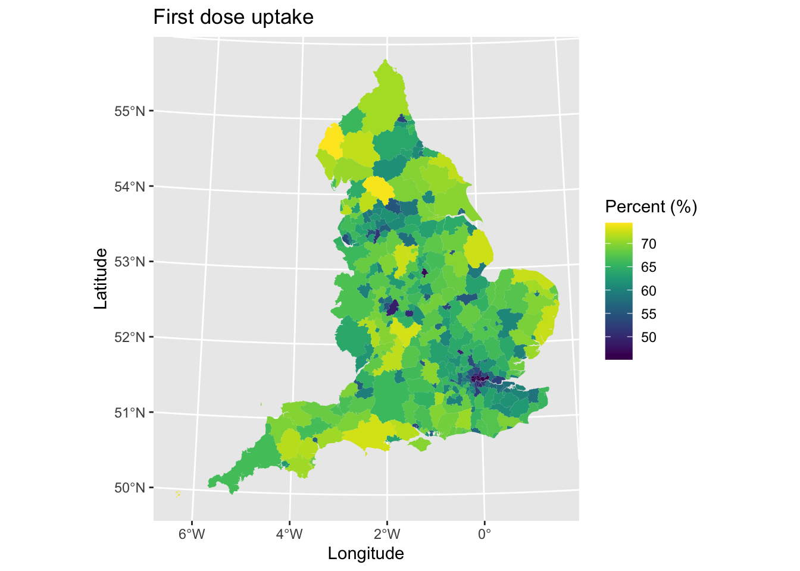
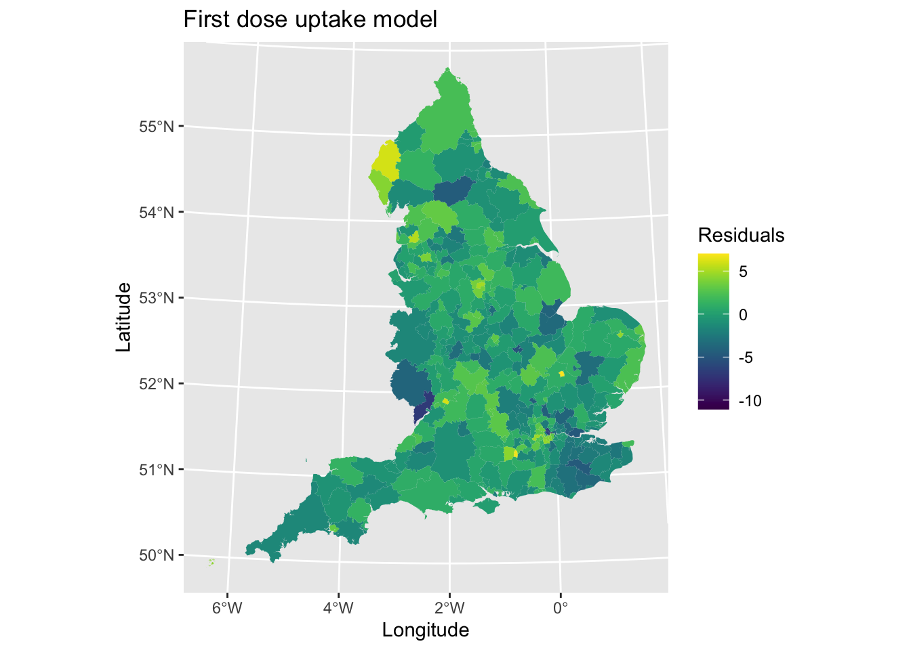

Chapter 3 Spatial Regression
So far we have learned how to visualise spatial data and explore if patterns display clustering of high/low values. However, what if we want to understand the predictors of spatial patterns? In this section, we extend regression techniques to incorporate the spatial structure of data. The lecture slides for this practical can be found here: powerpoint or pdf.
3.1 Exploring the data
In this tutorial, we will focus on understanding geographical patterns in COVID-19 vaccination uptake. Our analysis will use data collected for Local Authorities Districts (LADs). LADs are large administrative areas that correspond to Local Government areas, typically equivalent to a city, large town or region.
I have collected data on uptake of COVID-19 vaccines (split by number of first and second doses upto 17th June 2021 from here. We will focus on the percentage of people who have had their first vaccination dose as our outcome variable of interest here. I have also compiled a suite of explanatory and contextual variables to help understand patterns in vaccination uptake. These include:
- Population data was gathered to provde the denominator for our outcome variables. These data are for mid-year 2019 (~July) and were the most recent available statistics available at the time. Data were downloaded from here.
- Population density is also calculated using the population estimates based on the ratio of people to the size of the area. We use this variable to account for urban and rural differences in population (as a proxy).
- Median age was collected from the above population data, to account for the local age structure of areas since older groups could receive their vaccine at an earlier date.
- Ethnicity is measured in aggregated ethnic groups. This was selected because of evidence that some ethnic groups have been targeted with misinformation that may have put them off getting their vaccine. We use estimate population counts for 2019 from here. I cleaned the data and converted the population estimates into percentages for the purpose of our analyses. The following aggregated ethnic groups are available: White British, Other White, Black or Black British, Asian or Asian British, Other Ethnicity. For analyses, we will look at all groups other than White British as we hypothesise they may have the highest uptake rates.
- Deprivation was measured using the Index of Multiple Deprivation score (2019). The composite index is the most commonly used measure of deprivation used by researchers and policy officials. We include deprivation in our analyses as we hypothesise that uptake will be lower in more deprived areas. The data are openly available here.
Let’s load the data into R and tidy it up.
# Load package
library(sf)
# Load and clean spatial data
lad_uk <- read_sf("./Shapefiles/UK_LAD/Local_Authority_Districts_(December_2019)_Boundaries_UK_BFC.shp") # Load shapefile for Local Authority Districts (LADs) for UK (sorry but could not find only England version so need to convert to match data)
lad_uk$country <- substr(lad_uk$lad19cd, 0, 1) # Record first letter of LAD code (denotes country)
lad_eng <- lad_uk[lad_uk$country == "E",] # Subset only English LADs
# Tidy and join on explanatory variables
lad_data <- read.csv("./Data/LAD_vaccine_data.csv") # Load vaccine uptake and demographic data for England
lad_eng <- merge(lad_eng, lad_data, by.x = "lad19cd", by.y = "ltla_code", all.x = TRUE) # Join on both datasets
lad_eng$pop_density <- lad_eng$population / (lad_eng$st_areasha / 1000000) # Calculate population density (st_areashape is measured in metres^2 so need to convert to km^2 by dividing by 1,000,000)
lad_eng$percent_first_dose <- (lad_eng$total_first_dose / lad_eng$population) * 100 # Calculate outcome variable
# Remove objects to save space
rm(lad_uk, lad_data) The first step is to visualise our outcome variable and examine if there are any spatial patterns. Ideally we would age-standardise our outcome since older age groups were allowed to be vaccinated at early dates, but for simplicity we will stick with the raw percentage of uptake don’t have a go at my laziness.
# Load packages
library(ggplot2)
library(viridis)
# Plot
map1 <- ggplot() + # Call ggplot command
geom_sf(data = lad_eng, aes(fill = percent_first_dose), lwd = 0) + # Define what to plot
scale_fill_viridis() + # Make colourblind friendly
xlab("Longitude") + # Add x-axis label
ylab("Latitude") + # Add y-axis label
labs(title = "First dose uptake", # Edit plot title
fill = "Percent (%)") # Edit legend title
map1 # Print plot
What are the main spatial patterns that you can observe? There is lower uptake in urban areas, especially London, although many of these areas are small on the map due taking up smaller land mass. Else, there is probably not any other distinct spatial pattern.
3.2 Non-spatial regression
If we wanted to understand why uptake was higher or lower in certain areas, we might use a regression model. If we focus on the standard OLS regression model, we utilise the following equation:
\[ y = X\beta + \epsilon \]
Here, we predict \(y\) as a function of a series of predictor \(X\) variables that we adjust their effects based on \(\beta\) values and some measure of the error \(\epsilon\). We can use an OLS regression model to help us explain patterns in uptake, based on our explanatory variables.
model1 <- lm(percent_first_dose ~ median_age + Other_White + Mixed + Black + Asian + Other + mean_imd_score + pop_density, data = lad_eng) # Fit a linear regression model for the following equation (outcome ~ explanatory)
summary(model1) # Print model results summary##
## Call:
## lm(formula = percent_first_dose ~ median_age + Other_White +
## Mixed + Black + Asian + Other + mean_imd_score + pop_density,
## data = lad_eng)
##
## Residuals:
## Min 1Q Median 3Q Max
## -11.0686 -1.3129 -0.1212 1.2518 7.0054
##
## Coefficients:
## Estimate Std. Error t value Pr(>|t|)
## (Intercept) 3.203e+01 2.113e+00 15.155 < 2e-16 ***
## median_age 8.150e-01 4.255e-02 19.155 < 2e-16 ***
## Other_White -7.320e-02 4.555e-02 -1.607 0.1091
## Mixed 4.014e-01 1.589e-01 2.526 0.0120 *
## Black -2.516e-01 5.138e-02 -4.896 1.58e-06 ***
## Asian 1.910e-02 2.139e-02 0.893 0.3724
## Other -1.406e-01 1.100e-01 -1.278 0.2021
## mean_imd_score -9.943e-02 1.925e-02 -5.166 4.31e-07 ***
## pop_density -2.440e-04 9.955e-05 -2.451 0.0148 *
## ---
## Signif. codes: 0 '***' 0.001 '**' 0.01 '*' 0.05 '.' 0.1 ' ' 1
##
## Residual standard error: 2.287 on 308 degrees of freedom
## Multiple R-squared: 0.8612, Adjusted R-squared: 0.8576
## F-statistic: 238.9 on 8 and 308 DF, p-value: < 2.2e-16Urgh, what ugly output. I mean it is functional, but not pretty. Good thing we can make the output nicer using various packages in R. I really like gtsummary which can clean regression tables up.
library(gtsummary) # Load package
tbl_model1 <- tbl_regression(model1, label = list(median_age ~ "Median age", Other_White ~ "Other White (%)", Mixed ~ "Mixed (%)", Black ~ "Black (%)", Asian ~ "Asian (%)", Other ~ "Other Ethnicity (%)", mean_imd_score ~ "Deprivation score", pop_density ~ "Population density")) # Make tidy table
tbl_model1 # Print| Characteristic | Beta | 95% CI1 | p-value |
|---|---|---|---|
| Median age | 0.81 | 0.73, 0.90 | <0.001 |
| Other White (%) | -0.07 | -0.16, 0.02 | 0.11 |
| Mixed (%) | 0.40 | 0.09, 0.71 | 0.012 |
| Black (%) | -0.25 | -0.35, -0.15 | <0.001 |
| Asian (%) | 0.02 | -0.02, 0.06 | 0.4 |
| Other Ethnicity (%) | -0.14 | -0.36, 0.08 | 0.2 |
| Deprivation score | -0.10 | -0.14, -0.06 | <0.001 |
| Population density | 0.00 | 0.00, 0.00 | 0.015 |
|
1
CI = Confidence Interval
|
|||
What does the model say?
- Median age was positively associated with the percentage of the population who were vaccinated, with areas that had older populations on average being associated with higher uptake.
- There are mixed associations found for the ethnicity variables - a negative association between the percentage of an area’s population that were Black or Black British and uptake (i.e., uptake was lower in areas with a higher share of the population that were Black), a positive association between Mixed ethnicity and uptake, and large uncertainty in estimates for ‘Asian,’ ‘Other White’ or ‘Other Ethnicity’ communities.
- Deprivation score was negatively associated with uptake, where as areas became more deprived uptake was lower.
- The effect for population density looks misleading in the cleaned table due to rounding issues, but if we scroll back up to the messier table we can see that as population density increases (i.e., larger more populated urban areas) uptake falls
A few questions for you to think about: Was this the correct statistical model? Were the correct explanatory variables used and what happens if you try others? Does the same associations persist if we look at second dose uptake?
One of the classical assumptions of an OLS regression model is the independence of errors (and to some extent observations as well). Since we have spatial data and areas closer together may be similar than those further apart (i.e., the characteristics and populations of Liverpool and Wirral are more similar than say, Liverpool and Guildford), this assumption may not hold. We can assess if this may be an issue through plotting the residuals (i.e., our error term \(\epsilon\)) from the regression model and exploring if any spatial patterns exist.
# Join on
lad_eng <- cbind(lad_eng, model1$residuals)
# Plot
map2 <- ggplot() + # Call ggplot command
geom_sf(data = lad_eng, aes(fill = model1.residuals), lwd = 0) + # Define what to plot
scale_fill_viridis() + # Make colourblind friendly
xlab("Longitude") + # Add x-axis label
ylab("Latitude") + # Add y-axis label
labs(title = "First dose uptake model", # Edit plot title
fill = "Residuals") # Edit legend title
map2 # Print plot
If there were no issues here, we might expect to find a random pattern. However, we can see this isn’t always the case. A positive residual would suggest that the observed value of an area is greater than what the model would predict based on the coefficients and it’s local values for each explanatory variable. There are some clustering of values in the North West, London and other urban areas. Similarly, a negative value suggests lower observed uptake than we might expect/predict from the model. We can see evidence of this in the West and South East of England.
Our analysis may therefore benefit from having a spatial regression model.
3.3 Selecting the right spatial model
The first thing we might want to check is the extent that there is spatial clustering of our data. We will start here by checking this for our outcome variable and the regression model residuals. We will follow the same methods that we introduced in the previous session.
We will need to identify the spatial structure of our dataset. We will follow the same previous method of assigning neighbouring areas based on Queen’s contiguity. One issue here is that we have two Local Authorities that are islands (Isles of Scilly and Isle of Wight) which do not have any neighbours. To solve this, we could either assign the two islands manually to their nearest ‘neighbour’ (e.g., Isles of Scilly to Cornwall) or remove them from our analysis. For the basis of teaching you the methods here and because I am too lazy to code it up as it is a faff, we will just remove them from the data. We ought to re-run our regression model since we are dropping two observations, but we will not to save time here (we will correct this later so stay tuned).
Let’s check the spatial clustering in our outcome variable through calculating the Moran’s I.
library(spdep) # Load package
lad_eng <- lad_eng[lad_eng$lad19cd != "E06000053" & lad_eng$lad19cd != "E06000046",] # Drop Isles of Scilly or Isle of Wight
nb <- poly2nb(lad_eng, queen = TRUE) # Calculate queen contiguity for areas (slow)
lw <- nb2listw(nb, style = "W", zero.policy = TRUE) # Assign weights based on list of neighbours
m1 <- moran.test(lad_eng$percent_first_dose, lw) # Calculate Moran's I
m1 # Print result##
## Moran I test under randomisation
##
## data: lad_eng$percent_first_dose
## weights: lw
##
## Moran I statistic standard deviate = 11.055, p-value < 2.2e-16
## alternative hypothesis: greater
## sample estimates:
## Moran I statistic Expectation Variance
## 0.407962351 -0.003184713 0.001383250A Moran’s I value of 0.4079624 would indicate existence of moderate spatial clustering of first COVID-19 vaccination dose uptake.
Next, we will repeat the analysis for the regression model residuals. Remember this is more important in checking the model assumptions.
m2 <- moran.test(lad_eng$model1.residuals, lw) # Calculate Moran's I
m2 # Print result##
## Moran I test under randomisation
##
## data: lad_eng$model1.residuals
## weights: lw
##
## Moran I statistic standard deviate = 7.4067, p-value = 6.476e-14
## alternative hypothesis: greater
## sample estimates:
## Moran I statistic Expectation Variance
## 0.271550385 -0.003184713 0.001375889Here, a value of 0.2715504 suggests weak clustering. While low, the result is statistically significant suggesting it is important variation that we need to take in account in how we approach our regression analysis.
Do you think that was a bit of a faff to code up? Well, you can do the whole thing in a single line of code thanks to spdep’s lm.morantest command. Indeed, it can allow us to update our regression model with the dropped observations quickly too. OK I should I have said this earlier to not waste your time, but sorry not sorry as it is useful to show the manual process I hope.
model1 <- lm(percent_first_dose ~ median_age + Other_White + Mixed + Black + Asian + Other + mean_imd_score + pop_density, data = lad_eng) # Re-run regression model
m3 <- lm.morantest(model1, lw) # Run Moran's I analysis of residuals
m3 # Print results##
## Global Moran I for regression residuals
##
## data:
## model: lm(formula = percent_first_dose ~ median_age + Other_White + Mixed + Black + Asian + Other + mean_imd_score +
## pop_density, data = lad_eng)
## weights: lw
##
## Moran I statistic standard deviate = 7.6783, p-value = 8.061e-15
## alternative hypothesis: greater
## sample estimates:
## Observed Moran I Expectation Variance
## 0.271337873 -0.010969132 0.001351802Again we get a similar result.
So we have a problem. How might we address it? It might be that we have left out some unmeasured explanatory covariates that would account for the spatial variation. This might not always be possible. A different approach would be to account for the spatial structure of our underlying dataset. We could do this by adding in a categorical variable representing each area as a fixed effect in the regression model. You can try this by re-running the previous code and adding into the formula lad19cd - what are the issues this brings? We could also extend this model to be a multi-level regression model where the area identifier is specified as a random effect (check out R package lme4 for more here). Neither of these models explicitly accounts for the spatial nature of the data (i.e., the regression model does not know the spatial structure of the data).
The other thing we could do is use a spatial regression model that explicitly accounts for the locations of each data point. Here we tell the regression model that the spatial structure of data points matters for their interpretation (i.e., data points closer to each other are more similar than those further apart). There are a lot of different types of spatial regression models. How might we select the correct model?
Selection of models may be based on which specification we think best describes our data. This is hard to decide! The other approach is that we can utilise model fit statistics to assess which spatial models may improve upon the OLS regression model we previously fit. We can do this using spdep’s lm.LMtests function. Here we test for different features of spatial dependence in our data/model. For review here, please consult the lecture slides for this practical located here. Tl;dr spatial dependence is where the spatial configuration (i.e., structure of locations) affects our outcome.
We will focus in this practical on spatial lag and spatial error models. The following code tests for whether a spatially lagged dependent variable or spatial error dependence can improve our model fit. We can test for more things using this code, but for now we stick with these four tests.
spat_dep_test <- lm.LMtests(model1, lw, test=c("LMerr", "LMlag", "RLMerr", "RLMlag")) # Test for spatial dependence
spat_dep_test##
## Lagrange multiplier diagnostics for spatial dependence
##
## data:
## model: lm(formula = percent_first_dose ~ median_age + Other_White + Mixed + Black + Asian + Other + mean_imd_score +
## pop_density, data = lad_eng)
## weights: lw
##
## LMerr = 52.31, df = 1, p-value = 4.738e-13
##
##
## Lagrange multiplier diagnostics for spatial dependence
##
## data:
## model: lm(formula = percent_first_dose ~ median_age + Other_White + Mixed + Black + Asian + Other + mean_imd_score +
## pop_density, data = lad_eng)
## weights: lw
##
## LMlag = 37.432, df = 1, p-value = 9.466e-10
##
##
## Lagrange multiplier diagnostics for spatial dependence
##
## data:
## model: lm(formula = percent_first_dose ~ median_age + Other_White + Mixed + Black + Asian + Other + mean_imd_score +
## pop_density, data = lad_eng)
## weights: lw
##
## RLMerr = 24.317, df = 1, p-value = 8.171e-07
##
##
## Lagrange multiplier diagnostics for spatial dependence
##
## data:
## model: lm(formula = percent_first_dose ~ median_age + Other_White + Mixed + Black + Asian + Other + mean_imd_score +
## pop_density, data = lad_eng)
## weights: lw
##
## RLMlag = 9.4386, df = 1, p-value = 0.002125If we consider all of the tests, we can see that for each test of spatial dependence that they are each statistically significant. This would suggest that each spatial model can benefit our analysis and model fit. If none were significant, then we would use the OLS regression results.
3.4 Spatial lag model
The first types of spatial models we will consider are those which incorporate a spatial lag. These models use variables that are spatially lagged, which means that they calculate measures for each area that characterise (e.g., mean value) their surrounding neighbours. Spatial lags might correspond to the outcome variable or explanatory variables. A spatial lag suggests that the surrounding areas have an influence on the outcome of an area.
3.4.1 SLX spatially lagged model
The first spatial regression model we will consider is the SLX spatial lag model. SLX here means Spatially Lagged X-variables. We define the model as:
\[ y = X \beta + WX \theta + \epsilon \]
The equation is a simple extension of the OLS regression equation. Our outcome variable \(y\) is a function of our explanatory variables \(X\) and their \(\beta\) coefficients, a spatial lag coefficient \(\theta\) of the \(X\) variables based on a spatial weight \(W\) and the error term \(\epsilon\). The \(\beta\) value represents the direct effect of an explanatory variable and the \(\theta\) value represents the indirect effect. An indirect effect is synonymous with a spillover effect whereby changes in \(x\) in an area have on it’s surrounding neighbours based on how \(W\) is defined. The spatial lags are exogenous in definition.
To fit the model, we use the R package spatialreg which allows us to fit cross-sectional spatial regression models. We re-run the previous analysis of first dose uptake using this spatial model and tidy the output (please note that gtsummary does not handle spatial models well).
library(spatialreg) # Load package
model2 <- lmSLX(percent_first_dose ~ median_age + Other_White + Mixed + Black + Asian + Other + mean_imd_score + pop_density, data = lad_eng, lw) # Spatial lag model
tbl_model2 <- tbl_regression(model2, label = list(median_age ~ "Median age", Other_White ~ "Other White (%)", Mixed ~ "Mixed (%)", Black ~ "Black (%)", Asian ~ "Asian (%)", Other ~ "Other Ethnicity (%)", mean_imd_score ~ "Deprivation score", pop_density ~ "Population density", lag.median_age ~ "Lag: Median age", lag.Other_White ~ "Lag: Other White (%)", lag.Mixed ~ "Lag: Mixed (%)", lag.Black ~ "Lag: Black (%)", lag.Asian ~ "Lag: Asian (%)", lag.Other ~ "Lag: Other Ethnicity (%)", lag.mean_imd_score ~ "Lag: Deprivation score", lag.pop_density ~ "Lag: Population density")) # Tidy model output
tbl_model2 # Print| Characteristic | Beta | 95% CI1 | p-value |
|---|---|---|---|
| Median age | 0.90 | 0.81, 1.0 | <0.001 |
| Other White (%) | -0.08 | -0.19, 0.03 | 0.2 |
| Mixed (%) | 0.31 | -0.01, 0.62 | 0.055 |
| Black (%) | -0.17 | -0.29, -0.06 | 0.003 |
| Asian (%) | 0.02 | -0.03, 0.07 | 0.4 |
| Other Ethnicity (%) | -0.01 | -0.24, 0.23 | >0.9 |
| Deprivation score | -0.10 | -0.15, -0.04 | <0.001 |
| Population density | 0.00 | 0.00, 0.00 | 0.4 |
| Lag: Median age | -0.07 | -0.22, 0.09 | 0.4 |
| Lag: Other White (%) | 0.04 | -0.16, 0.23 | 0.7 |
| Lag: Mixed (%) | 0.48 | -0.14, 1.1 | 0.13 |
| Lag: Black (%) | -0.22 | -0.45, 0.00 | 0.052 |
| Lag: Asian (%) | 0.04 | -0.06, 0.13 | 0.4 |
| Lag: Other Ethnicity (%) | -0.19 | -0.68, 0.29 | 0.4 |
| Lag: Deprivation score | -0.01 | -0.09, 0.06 | 0.7 |
| Lag: Population density | 0.00 | 0.00, 0.00 | 0.046 |
|
1
CI = Confidence Interval
|
|||
To interpret the model can be difficult. The \(\beta\) coefficients are not exactly the same. Rather, to understand the marginal effect of our covariates, we need to estimate their total impacts (i.e., direct effect + indirect effect). To do this, we use the following piece of code.
model2_imp <- impacts(model2, listw = lw) # Estimate direct, indirect and total effects of variables
model2_imp # Print## Impact measures (SLX, estimable):
## Direct Indirect Total
## median_age 0.9009090557 -0.0696177362 0.8312913196
## Other_White -0.0790245349 0.0358434195 -0.0431811154
## Mixed 0.3057806432 0.4837927431 0.7895733864
## Black -0.1732816347 -0.2225162881 -0.3957979227
## Asian 0.0188294285 0.0374534457 0.0562828742
## Other -0.0058036010 -0.1928748969 -0.1986784979
## mean_imd_score -0.0971854562 -0.0125373425 -0.1097227986
## pop_density 0.0001022996 -0.0004974955 -0.0003951959You will see here these are exactly the same as \(\beta\) coefficients for this model, however this will not always be the case. What is useful here is that we can see the direct impact in an area, the indirect effects surrounding each and the total effect of each factor considering both together. The spatial lags here are mostly non-statistically significant, other than for population density. It suggests that they bring little to the model.
Standard errors and p-values for these statistics can be estimated through the following modified version of the code.
model2_imp_se <- summary(impacts(model2, lw), zstats = TRUE) # Estimate
model2_imp_se # Print## Impact measures (SLX, estimable, n-k):
## Direct Indirect Total
## median_age 0.9009090557 -0.0696177362 0.8312913196
## Other_White -0.0790245349 0.0358434195 -0.0431811154
## Mixed 0.3057806432 0.4837927431 0.7895733864
## Black -0.1732816347 -0.2225162881 -0.3957979227
## Asian 0.0188294285 0.0374534457 0.0562828742
## Other -0.0058036010 -0.1928748969 -0.1986784979
## mean_imd_score -0.0971854562 -0.0125373425 -0.1097227986
## pop_density 0.0001022996 -0.0004974955 -0.0003951959
## ========================================================
## Standard errors:
## Direct Indirect Total
## median_age 0.0479267084 0.0788605699 0.0759959852
## Other_White 0.0554022011 0.1005400225 0.0903636892
## Mixed 0.1589370191 0.3165363389 0.3306975306
## Black 0.0588396940 0.1139981394 0.1050719658
## Asian 0.0236130613 0.0476175809 0.0435460352
## Other 0.1174828586 0.2470964358 0.2521944956
## mean_imd_score 0.0268712927 0.0388509279 0.0305507387
## pop_density 0.0001209284 0.0002482232 0.0002218059
## ========================================================
## Z-values:
## Direct Indirect Total
## median_age 18.79764092 -0.8827952 10.9386215
## Other_White -1.42637898 0.3565090 -0.4778591
## Mixed 1.92391077 1.5283956 2.3875999
## Black -2.94497851 -1.9519291 -3.7669222
## Asian 0.79741581 0.7865466 1.2924914
## Other -0.04939956 -0.7805653 -0.7877987
## mean_imd_score -3.61670192 -0.3227038 -3.5914941
## pop_density 0.84595204 -2.0042263 -1.7817198
##
## p-values:
## Direct Indirect Total
## median_age < 2.22e-16 0.377347 < 2.22e-16
## Other_White 0.15375898 0.721459 0.63275046
## Mixed 0.05436577 0.126414 0.01695879
## Black 0.00322977 0.050947 0.00016527
## Asian 0.42520958 0.431547 0.19618704
## Other 0.96060088 0.435058 0.43081446
## mean_imd_score 0.00029838 0.746920 0.00032879
## pop_density 0.39757950 0.045046 0.07479493We can also compare the results from the spatial model to our original OLS regression model
tbl_merge(list(tbl_model1, tbl_model2)) # Combine both model outputs together| Characteristic | Table 1 | Table 2 | ||||
|---|---|---|---|---|---|---|
| Beta | 95% CI1 | p-value | Beta | 95% CI1 | p-value | |
| Median age | 0.81 | 0.73, 0.90 | <0.001 | 0.90 | 0.81, 1.0 | <0.001 |
| Other White (%) | -0.07 | -0.16, 0.02 | 0.11 | -0.08 | -0.19, 0.03 | 0.2 |
| Mixed (%) | 0.40 | 0.09, 0.71 | 0.012 | 0.31 | -0.01, 0.62 | 0.055 |
| Black (%) | -0.25 | -0.35, -0.15 | <0.001 | -0.17 | -0.29, -0.06 | 0.003 |
| Asian (%) | 0.02 | -0.02, 0.06 | 0.4 | 0.02 | -0.03, 0.07 | 0.4 |
| Other Ethnicity (%) | -0.14 | -0.36, 0.08 | 0.2 | -0.01 | -0.24, 0.23 | >0.9 |
| Deprivation score | -0.10 | -0.14, -0.06 | <0.001 | -0.10 | -0.15, -0.04 | <0.001 |
| Population density | 0.00 | 0.00, 0.00 | 0.015 | 0.00 | 0.00, 0.00 | 0.4 |
| Lag: Median age | -0.07 | -0.22, 0.09 | 0.4 | |||
| Lag: Other White (%) | 0.04 | -0.16, 0.23 | 0.7 | |||
| Lag: Mixed (%) | 0.48 | -0.14, 1.1 | 0.13 | |||
| Lag: Black (%) | -0.22 | -0.45, 0.00 | 0.052 | |||
| Lag: Asian (%) | 0.04 | -0.06, 0.13 | 0.4 | |||
| Lag: Other Ethnicity (%) | -0.19 | -0.68, 0.29 | 0.4 | |||
| Lag: Deprivation score | -0.01 | -0.09, 0.06 | 0.7 | |||
| Lag: Population density | 0.00 | 0.00, 0.00 | 0.046 | |||
|
1
CI = Confidence Interval
|
||||||
Not a lot has changed if we compare the direct effects of coefficients (many remain within their 95% confidence intervals), probably because the spatial lagged effects were not strong or identifiable. Population density has become non-statistically significant mind you, as has percentage of people who with mixed ethnicity.
We can also compare model fit to see if the spatial model improves on the original OLS regression model. For example, we can check this by quickly looking at the AIC model fit.
AIC(model1) # OLS regression model## [1] 1424.31AIC(model2) # SLX spatial lag model## [1] 1406.79The spatial lag model does improve model fit overall.
3.4.2 SAR Spatial Lag
The other spatial lag model that we can specify is the following:
\[ y = \rho Wy + X\beta + \epsilon \]
SAR stands for Spatial AutoRegressive model. Here, we have the standard OLS regression equation \(X\beta + \epsilon\), however we also have included a spatial lag component \(\rho W\) of our outcome variable \(y\). \(W\) is once again our spatial weights matrix, with \(\rho\) representing the correlation of the spatial lag of \(y\) to \(y\).
Since the model contains \(y\) at both sides of the equation, it violates the exogeneity assumption of the OLS regression model. We therefore need a different approach to estimate the equation.
Please note: gtsummary does not handle spatial models well, so we will have to fudge it persist a bit here. If you can fix it, send your answers on a postcard/carrier pigeon please. Remember, you can always get the raw output of a model by using summary(model3).
model3 <- lagsarlm(percent_first_dose ~ median_age + Other_White + Mixed + Black + Asian + Other + mean_imd_score + pop_density, data = lad_eng, lw) # Model
tbl_model3 <- tbl_regression(model3) # Tidy model output
tbl_model3 # Print| Characteristic | Beta | 95% CI1 | p-value |
|---|---|---|---|
| rho | 0.23 | 0.16, 0.29 | <0.001 |
| (Intercept) | 16 | 10, 22 | <0.001 |
| median_age | 0.84 | 0.76, 0.92 | <0.001 |
| Other_White | -0.09 | -0.17, -0.01 | 0.029 |
| Mixed | 0.39 | 0.10, 0.68 | 0.008 |
| Black | -0.17 | -0.26, -0.07 | <0.001 |
| Asian | 0.04 | 0.00, 0.08 | 0.044 |
| Other | -0.04 | -0.24, 0.16 | 0.7 |
| mean_imd_score | -0.11 | -0.15, -0.08 | <0.001 |
| pop_density | 0.00 | 0.00, 0.00 | 0.15 |
|
1
CI = Confidence Interval
|
|||
Let’s compare it to our standard OLS regression model. We will go back to the untidy version of the output to match the above
tbl_model1 <- tbl_regression(model1, intercept = TRUE) # Redo Table 1 to match above format
tbl_merge(tbls = list(tbl_model1, tbl_model3), # Join output together
tab_spanner = c("**OLS**", "**Spatial Lag**")) # Rename columns (in bold)## Warning: `columns = vars(...)` has been deprecated in gt 0.3.0:
## * please use `columns = c(...)` instead
## Warning: `columns = vars(...)` has been deprecated in gt 0.3.0:
## * please use `columns = c(...)` instead
## Warning: `columns = vars(...)` has been deprecated in gt 0.3.0:
## * please use `columns = c(...)` instead
## Warning: `columns = vars(...)` has been deprecated in gt 0.3.0:
## * please use `columns = c(...)` instead
## Warning: `columns = vars(...)` has been deprecated in gt 0.3.0:
## * please use `columns = c(...)` instead
## Warning: `columns = vars(...)` has been deprecated in gt 0.3.0:
## * please use `columns = c(...)` instead
## Warning: `columns = vars(...)` has been deprecated in gt 0.3.0:
## * please use `columns = c(...)` instead
## Warning: `columns = vars(...)` has been deprecated in gt 0.3.0:
## * please use `columns = c(...)` instead
## Warning: `columns = vars(...)` has been deprecated in gt 0.3.0:
## * please use `columns = c(...)` instead
## Warning: `columns = vars(...)` has been deprecated in gt 0.3.0:
## * please use `columns = c(...)` instead
## Warning: `columns = vars(...)` has been deprecated in gt 0.3.0:
## * please use `columns = c(...)` instead
## Warning: `columns = vars(...)` has been deprecated in gt 0.3.0:
## * please use `columns = c(...)` instead
## Warning: `columns = vars(...)` has been deprecated in gt 0.3.0:
## * please use `columns = c(...)` instead
## Warning: `columns = vars(...)` has been deprecated in gt 0.3.0:
## * please use `columns = c(...)` instead
## Warning: `columns = vars(...)` has been deprecated in gt 0.3.0:
## * please use `columns = c(...)` instead
## Warning: `columns = vars(...)` has been deprecated in gt 0.3.0:
## * please use `columns = c(...)` instead
## Warning: `columns = vars(...)` has been deprecated in gt 0.3.0:
## * please use `columns = c(...)` instead
## Warning: `columns = vars(...)` has been deprecated in gt 0.3.0:
## * please use `columns = c(...)` instead
## Warning: `columns = vars(...)` has been deprecated in gt 0.3.0:
## * please use `columns = c(...)` instead
## Warning: `columns = vars(...)` has been deprecated in gt 0.3.0:
## * please use `columns = c(...)` instead
## Warning: `columns = vars(...)` has been deprecated in gt 0.3.0:
## * please use `columns = c(...)` instead
## Warning: `columns = vars(...)` has been deprecated in gt 0.3.0:
## * please use `columns = c(...)` instead
## Warning: `columns = vars(...)` has been deprecated in gt 0.3.0:
## * please use `columns = c(...)` instead
## Warning: `columns = vars(...)` has been deprecated in gt 0.3.0:
## * please use `columns = c(...)` instead
## Warning: `columns = vars(...)` has been deprecated in gt 0.3.0:
## * please use `columns = c(...)` instead| Characteristic | OLS | Spatial Lag | ||||
|---|---|---|---|---|---|---|
| Beta | 95% CI1 | p-value | Beta | 95% CI1 | p-value | |
| (Intercept) | 32 | 28, 36 | <0.001 | 16 | 10, 22 | <0.001 |
| median_age | 0.81 | 0.73, 0.90 | <0.001 | 0.84 | 0.76, 0.92 | <0.001 |
| Other_White | -0.07 | -0.16, 0.02 | 0.13 | -0.09 | -0.17, -0.01 | 0.029 |
| Mixed | 0.42 | 0.10, 0.73 | 0.009 | 0.39 | 0.10, 0.68 | 0.008 |
| Black | -0.25 | -0.36, -0.15 | <0.001 | -0.17 | -0.26, -0.07 | <0.001 |
| Asian | 0.02 | -0.02, 0.06 | 0.4 | 0.04 | 0.00, 0.08 | 0.044 |
| Other | -0.14 | -0.36, 0.07 | 0.2 | -0.04 | -0.24, 0.16 | 0.7 |
| mean_imd_score | -0.10 | -0.14, -0.06 | <0.001 | -0.11 | -0.15, -0.08 | <0.001 |
| pop_density | 0.00 | 0.00, 0.00 | 0.013 | 0.00 | 0.00, 0.00 | 0.15 |
| rho | 0.23 | 0.16, 0.29 | <0.001 | |||
|
1
CI = Confidence Interval
|
||||||
Not a lot has changed between the models, suggesting that the spatial patterns captured very little of the patterns observed in our covariates. The most interesting difference is for our population density variable pop_density, which has gone from statistically significant in our OLS regression model to insignificant in our spatial lag model. The percentage of people with their ethnicity as other White (Other_White) has now become statistically significant as well, with a negative association to the percentage vaccinated. Otherwise, the coefficients have remained similar and within the 95% Confidence Intervals of the OLS estimates.
The summary output for the spatial lag model gives us only the direct impacts for our coefficients, however we may be interested in the direct, indirect and total effects each covariate is having on our outcome variable.
impacts(model3, listw = lw) # Estimate direct and indirect effects## Impact measures (lag, exact):
## Direct Indirect Total
## median_age 0.8509693217 2.364693e-01 1.0874386629
## Other_White -0.0930566879 -2.585881e-02 -0.1189154975
## Mixed 0.3929949698 1.092064e-01 0.5022013292
## Black -0.1678335124 -4.663797e-02 -0.2144714806
## Asian 0.0406973608 1.130908e-02 0.0520064384
## Other -0.0389923533 -1.083529e-02 -0.0498276394
## mean_imd_score -0.1152847834 -3.203560e-02 -0.1473203881
## pop_density -0.0001353991 -3.762503e-05 -0.0001730242The table would suggest that the indirect effects of each covariate on the surrounding areas means that focusing on the direct association alone underestimates the total impact of each variable.
To get the standard errors and p-values for our direct, indirect and total effects, we use the following code. Unlike the SLX model, we cannot estimate these directly and therefore must use simulations (MCMC) approaches to estimate them. This only requires a slight modification to the code, in our case we will add in 500 simulations (the more the merrier, but impacts on processing time).
summary(impacts(model3, listw = lw, R = 500), zstats = TRUE) # Slow, but gives quantiles etc## Impact measures (lag, exact):
## Direct Indirect Total
## median_age 0.8509693217 2.364693e-01 1.0874386629
## Other_White -0.0930566879 -2.585881e-02 -0.1189154975
## Mixed 0.3929949698 1.092064e-01 0.5022013292
## Black -0.1678335124 -4.663797e-02 -0.2144714806
## Asian 0.0406973608 1.130908e-02 0.0520064384
## Other -0.0389923533 -1.083529e-02 -0.0498276394
## mean_imd_score -0.1152847834 -3.203560e-02 -0.1473203881
## pop_density -0.0001353991 -3.762503e-05 -0.0001730242
## ========================================================
## Simulation results (asymptotic variance matrix):
## Direct:
##
## Iterations = 1:500
## Thinning interval = 1
## Number of chains = 1
## Sample size per chain = 500
##
## 1. Empirical mean and standard deviation for each variable,
## plus standard error of the mean:
##
## Mean SD Naive SE Time-series SE
## median_age 0.8525121 4.038e-02 1.806e-03 1.806e-03
## Other_White -0.0931258 4.419e-02 1.976e-03 1.976e-03
## Mixed 0.3982622 1.494e-01 6.682e-03 6.682e-03
## Black -0.1656767 5.150e-02 2.303e-03 2.157e-03
## Asian 0.0403707 2.028e-02 9.068e-04 9.068e-04
## Other -0.0346247 1.024e-01 4.580e-03 4.580e-03
## mean_imd_score -0.1137616 1.920e-02 8.588e-04 8.588e-04
## pop_density -0.0001375 9.734e-05 4.353e-06 4.353e-06
##
## 2. Quantiles for each variable:
##
## 2.5% 25% 50% 75% 97.5%
## median_age 0.7742765 0.825442 0.8538912 8.782e-01 9.249e-01
## Other_White -0.1786118 -0.121101 -0.0927149 -6.467e-02 -1.025e-02
## Mixed 0.1137999 0.303110 0.4026023 4.936e-01 6.791e-01
## Black -0.2702979 -0.200784 -0.1657098 -1.294e-01 -7.291e-02
## Asian 0.0013119 0.025561 0.0400029 5.471e-02 7.826e-02
## Other -0.2354788 -0.098935 -0.0333859 3.072e-02 1.562e-01
## mean_imd_score -0.1501918 -0.126077 -0.1143237 -1.021e-01 -7.450e-02
## pop_density -0.0003154 -0.000204 -0.0001362 -7.563e-05 5.295e-05
##
## ========================================================
## Indirect:
##
## Iterations = 1:500
## Thinning interval = 1
## Number of chains = 1
## Sample size per chain = 500
##
## 1. Empirical mean and standard deviation for each variable,
## plus standard error of the mean:
##
## Mean SD Naive SE Time-series SE
## median_age 2.405e-01 5.020e-02 2.245e-03 2.245e-03
## Other_White -2.644e-02 1.424e-02 6.370e-04 5.752e-04
## Mixed 1.129e-01 4.999e-02 2.235e-03 2.235e-03
## Black -4.619e-02 1.592e-02 7.122e-04 7.122e-04
## Asian 1.156e-02 6.640e-03 2.969e-04 2.969e-04
## Other -9.145e-03 2.925e-02 1.308e-03 1.308e-03
## mean_imd_score -3.218e-02 8.807e-03 3.939e-04 3.591e-04
## pop_density -3.786e-05 2.731e-05 1.221e-06 1.221e-06
##
## 2. Quantiles for each variable:
##
## 2.5% 25% 50% 75% 97.5%
## median_age 1.536e-01 2.041e-01 2.366e-01 2.754e-01 3.402e-01
## Other_White -5.527e-02 -3.480e-02 -2.552e-02 -1.696e-02 -2.372e-03
## Mixed 2.852e-02 7.892e-02 1.091e-01 1.447e-01 2.175e-01
## Black -7.968e-02 -5.651e-02 -4.486e-02 -3.477e-02 -1.970e-02
## Asian 3.712e-04 6.883e-03 1.076e-02 1.592e-02 2.528e-02
## Other -7.010e-02 -2.694e-02 -9.219e-03 8.430e-03 4.732e-02
## mean_imd_score -5.121e-02 -3.791e-02 -3.172e-02 -2.601e-02 -1.645e-02
## pop_density -9.482e-05 -5.543e-05 -3.776e-05 -2.012e-05 1.481e-05
##
## ========================================================
## Total:
##
## Iterations = 1:500
## Thinning interval = 1
## Number of chains = 1
## Sample size per chain = 500
##
## 1. Empirical mean and standard deviation for each variable,
## plus standard error of the mean:
##
## Mean SD Naive SE Time-series SE
## median_age 1.0929770 0.0736553 3.294e-03 3.294e-03
## Other_White -0.1195685 0.0574824 2.571e-03 2.571e-03
## Mixed 0.5111369 0.1947910 8.711e-03 8.711e-03
## Black -0.2118644 0.0650089 2.907e-03 2.907e-03
## Asian 0.0519308 0.0264846 1.184e-03 1.184e-03
## Other -0.0437694 0.1311488 5.865e-03 5.865e-03
## mean_imd_score -0.1459417 0.0260142 1.163e-03 1.163e-03
## pop_density -0.0001753 0.0001234 5.517e-06 5.517e-06
##
## 2. Quantiles for each variable:
##
## 2.5% 25% 50% 75% 97.5%
## median_age 0.9555211 1.0432652 1.0900711 1.146e+00 1.236e+00
## Other_White -0.2328298 -0.1560703 -0.1194452 -8.298e-02 -1.277e-02
## Mixed 0.1390956 0.3846310 0.5179249 6.328e-01 8.995e-01
## Black -0.3357829 -0.2559570 -0.2117105 -1.670e-01 -9.434e-02
## Asian 0.0016831 0.0328099 0.0516210 7.085e-02 1.019e-01
## Other -0.3009490 -0.1265225 -0.0430737 4.023e-02 1.966e-01
## mean_imd_score -0.1950171 -0.1623149 -0.1468028 -1.305e-01 -9.528e-02
## pop_density -0.0003987 -0.0002676 -0.0001727 -9.592e-05 6.967e-05
##
## ========================================================
## Simulated standard errors
## Direct Indirect Total
## median_age 4.038093e-02 5.020011e-02 0.0736552558
## Other_White 4.419156e-02 1.424436e-02 0.0574823745
## Mixed 1.494219e-01 4.998651e-02 0.1947909898
## Black 5.149804e-02 1.592425e-02 0.0650089053
## Asian 2.027763e-02 6.639541e-03 0.0264846444
## Other 1.024182e-01 2.925324e-02 0.1311488321
## mean_imd_score 1.920265e-02 8.807172e-03 0.0260142304
## pop_density 9.734392e-05 2.730753e-05 0.0001233592
##
## Simulated z-values:
## Direct Indirect Total
## median_age 21.1117524 4.7901252 14.839090
## Other_White -2.1073216 -1.8563599 -2.080090
## Mixed 2.6653536 2.2581031 2.624027
## Black -3.2171469 -2.9004602 -3.259006
## Asian 1.9908999 1.7410899 1.960788
## Other -0.3380712 -0.3126044 -0.333738
## mean_imd_score -5.9242663 -3.6538507 -5.610072
## pop_density -1.4122687 -1.3864974 -1.421358
##
## Simulated p-values:
## Direct Indirect Total
## median_age < 2.22e-16 1.6668e-06 < 2.22e-16
## Other_White 0.0350897 0.06340228 0.0375173
## Mixed 0.0076907 0.02393924 0.0086897
## Black 0.0012947 0.00372615 0.0011180
## Asian 0.0464919 0.08166783 0.0499038
## Other 0.7353095 0.75458121 0.7385772
## mean_imd_score 3.1369e-09 0.00025834 2.0224e-08
## pop_density 0.1578709 0.16559506 0.1552128It gives a lot of output, but it is useful to pick apart how useful our estimates are.
3.5 Spatial error models
We next explore how to implement spatial error models. The underlying models are modified OLS regression models meaning the models are more straightforward ways of accounting for spatial processes in our analysis, as well as being fairly easy to interpret. In this section, we will deal with models that incorporate the spatial structure of the dataset within the error terms. Remember that this was the key OLS assumption that might have been violated (i.e., independence of errors).
3.5.1 Spatial Error Model (SEM)
The main equation that we are trying to estimate in our spatial error model is:
\[ y = X\beta + u \]
Here, we are trying to explain our outcome variable \(y\) based upon our the \(\beta\) coefficients of covariate variables \(X\) plus our error term \(u\). The equation itself looks fairly similar to the OLS equation, until we introduce the spatial autocorrelation element to our model. We partition \(u\) into the following:
\[ u = \lambda Wu + \epsilon \]
We define \(u\) as a coefficient \(\lambda\) controlling the spatial weight \(W\) placed on the the error terms \(u\), plus the general error term \(\epsilon\) for our model.
We cannot use the OLS regression model to estimate the equation, since the assumption of independence of error terms is violated. We therefore require new approaches to do this. Again, gtsummary doesn’t like these types of models but I have included here as it helps clean the output up.
model4 <- errorsarlm(percent_first_dose ~ median_age + Other_White + Mixed + Black + Asian + Other + mean_imd_score + pop_density, data = lad_eng, lw) # Model
tbl_model4 <- tbl_regression(model4) # Tidy model output## x Unable to identify the list of variables.
##
## This is usually due to an error calling `stats::model.frame(x)`or `stats::model.matrix(x)`.
## It could be the case if that type of model does not implement these methods.
## Rarely, this error may occur if the model object was created within
## a functional programming framework (e.g. using `lappy()`, `purrr::map()`, etc.).tbl_model4 # Print## Warning: `columns = vars(...)` has been deprecated in gt 0.3.0:
## * please use `columns = c(...)` instead
## Warning: `columns = vars(...)` has been deprecated in gt 0.3.0:
## * please use `columns = c(...)` instead
## Warning: `columns = vars(...)` has been deprecated in gt 0.3.0:
## * please use `columns = c(...)` instead
## Warning: `columns = vars(...)` has been deprecated in gt 0.3.0:
## * please use `columns = c(...)` instead
## Warning: `columns = vars(...)` has been deprecated in gt 0.3.0:
## * please use `columns = c(...)` instead
## Warning: `columns = vars(...)` has been deprecated in gt 0.3.0:
## * please use `columns = c(...)` instead
## Warning: `columns = vars(...)` has been deprecated in gt 0.3.0:
## * please use `columns = c(...)` instead
## Warning: `columns = vars(...)` has been deprecated in gt 0.3.0:
## * please use `columns = c(...)` instead
## Warning: `columns = vars(...)` has been deprecated in gt 0.3.0:
## * please use `columns = c(...)` instead
## Warning: `columns = vars(...)` has been deprecated in gt 0.3.0:
## * please use `columns = c(...)` instead
## Warning: `columns = vars(...)` has been deprecated in gt 0.3.0:
## * please use `columns = c(...)` instead
## Warning: `columns = vars(...)` has been deprecated in gt 0.3.0:
## * please use `columns = c(...)` instead
## Warning: `columns = vars(...)` has been deprecated in gt 0.3.0:
## * please use `columns = c(...)` instead| Characteristic | Beta | 95% CI1 | p-value |
|---|---|---|---|
| (Intercept) | 29 | 25, 33 | <0.001 |
| median_age | 0.87 | 0.79, 0.95 | <0.001 |
| Other_White | -0.11 | -0.19, -0.02 | 0.020 |
| Mixed | 0.24 | -0.03, 0.51 | 0.078 |
| Black | -0.19 | -0.28, -0.09 | <0.001 |
| Asian | 0.01 | -0.03, 0.05 | 0.5 |
| Other | 0.00 | -0.20, 0.19 | >0.9 |
| mean_imd_score | -0.08 | -0.12, -0.04 | <0.001 |
| pop_density | 0.00 | 0.00, 0.00 | 0.6 |
| lambda | 0.62 | 0.51, 0.72 | <0.001 |
|
1
CI = Confidence Interval
|
|||
These models do not have direct and indirect effects since the spatial component only affects the error term.
We may also want to check whether a spatial error model was relevant here through running a Hausman Test which compares if the model improves upon the OLS model.
HausmanTest <- Hausman.test(model4) # Run test
HausmanTest # Print##
## Spatial Hausman test (asymptotic)
##
## data: NULL
## Hausman test = 21.562, df = 9, p-value = 0.01038The test suggests that the spatial error improves the model (i.e., we want it to be statistically significant).
We can compare the model output to the OLS and spatial lag models too.
tbl_merge(tbls = list(tbl_model1, tbl_model3, tbl_model4), # Join three model outputs together
tab_spanner = c("**OLS**", "**Spatial Lag**", "**Spatial Error**")) # Rename columns (in bold)| Characteristic | OLS | Spatial Lag | Spatial Error | ||||||
|---|---|---|---|---|---|---|---|---|---|
| Beta | 95% CI1 | p-value | Beta | 95% CI1 | p-value | Beta | 95% CI1 | p-value | |
| (Intercept) | 32 | 28, 36 | <0.001 | 16 | 10, 22 | <0.001 | 29 | 25, 33 | <0.001 |
| median_age | 0.81 | 0.73, 0.90 | <0.001 | 0.84 | 0.76, 0.92 | <0.001 | 0.87 | 0.79, 0.95 | <0.001 |
| Other_White | -0.07 | -0.16, 0.02 | 0.13 | -0.09 | -0.17, -0.01 | 0.029 | -0.11 | -0.19, -0.02 | 0.020 |
| Mixed | 0.42 | 0.10, 0.73 | 0.009 | 0.39 | 0.10, 0.68 | 0.008 | 0.24 | -0.03, 0.51 | 0.078 |
| Black | -0.25 | -0.36, -0.15 | <0.001 | -0.17 | -0.26, -0.07 | <0.001 | -0.19 | -0.28, -0.09 | <0.001 |
| Asian | 0.02 | -0.02, 0.06 | 0.4 | 0.04 | 0.00, 0.08 | 0.044 | 0.01 | -0.03, 0.05 | 0.5 |
| Other | -0.14 | -0.36, 0.07 | 0.2 | -0.04 | -0.24, 0.16 | 0.7 | 0.00 | -0.20, 0.19 | >0.9 |
| mean_imd_score | -0.10 | -0.14, -0.06 | <0.001 | -0.11 | -0.15, -0.08 | <0.001 | -0.08 | -0.12, -0.04 | <0.001 |
| pop_density | 0.00 | 0.00, 0.00 | 0.013 | 0.00 | 0.00, 0.00 | 0.15 | 0.00 | 0.00, 0.00 | 0.6 |
| rho | 0.23 | 0.16, 0.29 | <0.001 | ||||||
| lambda | 0.62 | 0.51, 0.72 | <0.001 | ||||||
|
1
CI = Confidence Interval
|
|||||||||
The spatial error model looks relatively similar to the spatial lag model, although there are some differences with Mixed and Asian variables now being statistically insignificant.
3.5.2 Spatial Durbin Error
We can extend the spatial error model through adding in spatial lags for our x-variables, accounting for the spatial effects of independent variables. This requires only a minor modification of the spatial error model equation:
\[ y = X\beta + WX\theta + u \] The key difference to the spatial error model is the introduction of \(WX\theta\) which applies the spatial weight \(W\) to the independent variables \(X\) and our spatial autocorrelation coefficient \(\theta\).
\(u\) again is defined as:
\[ u = \lambda Wu + \epsilon \]
We can fit this model using a slight change to the spatial error code. Please note that gtsummary does not like this type of model output either, so it is a little messy again.
model5 <- errorsarlm(percent_first_dose ~ median_age + Other_White + Mixed + Black + Asian + Other + mean_imd_score + pop_density, data = lad_eng, lw, etype = "emixed") # Fit model
tbl_model5 <- tbl_regression(model5) # Tidy model output
tbl_model5 # Print| Characteristic | Beta | 95% CI1 | p-value |
|---|---|---|---|
| (Intercept) | 31 | 22, 41 | <0.001 |
| median_age | 0.91 | 0.83, 1.0 | <0.001 |
| Other_White | -0.10 | -0.19, -0.01 | 0.034 |
| Mixed | 0.28 | 0.00, 0.57 | 0.049 |
| Black | -0.20 | -0.30, -0.10 | <0.001 |
| Asian | 0.02 | -0.02, 0.06 | 0.4 |
| Other | 0.00 | -0.20, 0.21 | >0.9 |
| mean_imd_score | -0.07 | -0.11, -0.03 | 0.001 |
| pop_density | 0.00 | 0.00, 0.00 | 0.6 |
| lag.median_age | -0.08 | -0.25, 0.08 | 0.3 |
| lag.Other_White | 0.08 | -0.14, 0.29 | 0.5 |
| lag.Mixed | 0.62 | -0.04, 1.3 | 0.064 |
| lag.Black | -0.11 | -0.35, 0.14 | 0.4 |
| lag.Asian | 0.02 | -0.08, 0.12 | 0.7 |
| lag.Other | -0.38 | -0.93, 0.16 | 0.2 |
| lag.mean_imd_score | -0.06 | -0.14, 0.02 | 0.14 |
| lag.pop_density | 0.00 | 0.00, 0.00 | 0.15 |
| lambda | 0.55 | 0.43, 0.66 | <0.001 |
|
1
CI = Confidence Interval
|
|||
The inclusion of spatial lags does not seem to bring much advantage here. Since we have introduced spatial lags into our model, we can also calculate the direct, indirect and total effects of covariates too. I have included the code for calculating standard errors, however we don’t need to run it again because I am lazy.
impacts(model5, listw = lw) # Calculate indirect, direct and total effects## Impact measures (SDEM, estimable):
## Direct Indirect Total
## median_age 9.115621e-01 -0.0841690665 0.8273930013
## Other_White -9.924527e-02 0.0753496736 -0.0238955924
## Mixed 2.834532e-01 0.6242855916 0.9077388144
## Black -2.041149e-01 -0.1070505848 -0.3111654388
## Asian 1.583933e-02 0.0209621790 0.0368015073
## Other 3.784383e-03 -0.3849049537 -0.3811205710
## mean_imd_score -7.049241e-02 -0.0594952812 -0.1299876895
## pop_density 5.783698e-05 -0.0003724632 -0.0003146262# summary(impacts(model3, listw = lw, R = 500), zstats = TRUE) # Slow, but gives quantiles, standard errors and p-valuesThere are more extensions of these models than you can shake a stick at we could explore here - for example, SARAR or SARMA - and most of them are essentially different combinations of spatial lags and spatial error models. We can save them for a rainy day.
3.6 Summary
In this practical session, we have explored how to extend the standard OLS regression model to incorporate spatial processes. We will continue this theme in the next, and final, session where we examine Geographically Weighted Regression.